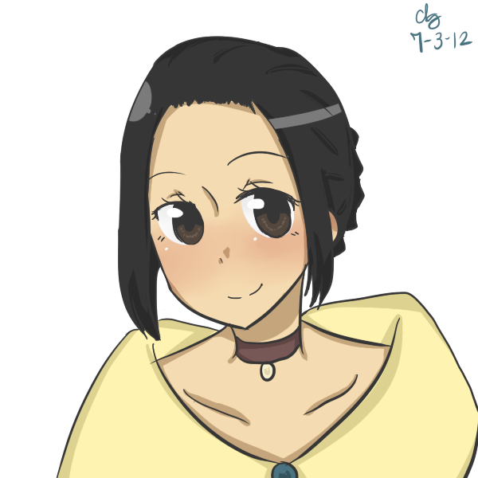

|  | She is a woman of great social status and is believed to be Father Dámaso's goddaughter as well as the daughter of Capitan Tiago. She is truly Father Dámaso's biological child, the result of their scandalous connection with Capitan Tiago's wife. Ibarra and Mara Clara grew up together, but Father Dámaso forbade their engagement. |